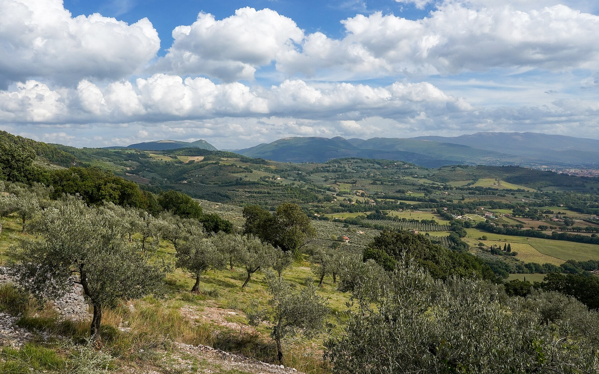

A field guide & research desk
So you want to start a small olive oil label in Upstate New York — source American oil, bottle it, put your name on it, and get it onto shelves. Here is the honest lay of the land, gathered from primary sources and laid out so you can check every claim yourself.
What this is
This site treats a family daydream — “we could bottle our own olive oil” — as a real business question and does the homework: where the oil actually comes from, what it costs, what the law requires, how it gets sold, and who you would be up against.
Everything here is a starting point for your own research, not a substitute for it. Olive-oil prices swing wildly from year to year, and food regulations change; every figure is dated and every important claim is footnoted so you can go straight to the source and confirm it's still true. Think of it as a well-organized reading list with the boring parts already read.
The chapters
Read start to finish, or jump to the question you're chewing on. Each chapter ends with its own list of sources.
A ~$3 billion, fast-growing US market where Americans drink imports — and barely produce any oil themselves. Where the opening is.
Who actually grows and mills olive oil in America, who will sell it to you in bulk or under private label, and the catch: there isn't much of it.
The 2024 price shock, where it sits now, where to watch live prices for free, and exactly how to ask a producer for a quote.
FDA registration, the New York 20-C license, why your home kitchen is off-limits for oil, dark glass, and what must appear on a label.
Farmers' markets to KeHE, slotting fees, tasting rooms, and the direct-to-consumer playbook that lets a small brand keep its margin.
California Olive Ranch, Cobram, the breakout DTC brand Graza, Séka Hills — who's winning, who owns whom, and what it means for you.
The mom-and-pop shops already doing this — NY's tasting rooms plus nationwide grower-mills and DTC micro-brands. Your real peer group.
The full bibliography — every agency, price tracker, supplier, and report cited across the guide, with links and access dates.
A worked, back-of-envelope cost stack for a single 500 ml bottle — from bulk oil to the shelf price a shopper pays.
The shape of the opportunity

A small olive oil brand doesn't win by growing the best olives. It wins by choosing well, bottling carefully, telling a true story, and getting the bottle into the right hands nearby. — the thesis of this whole guide